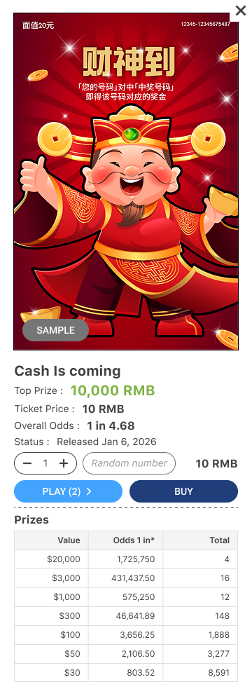
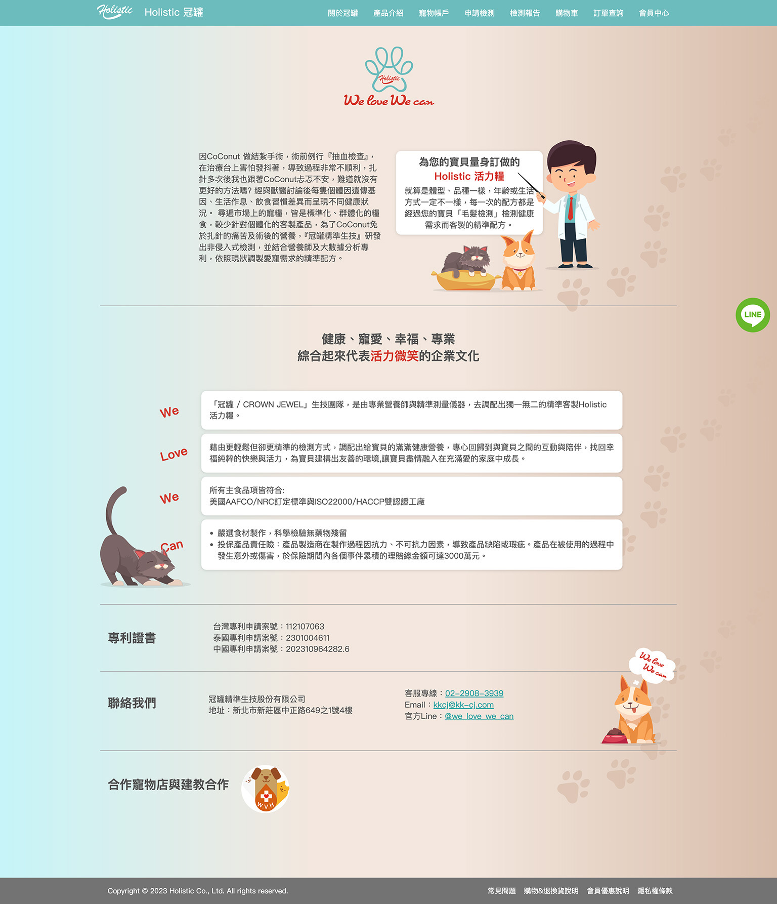
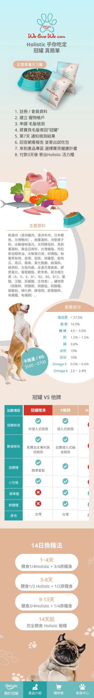
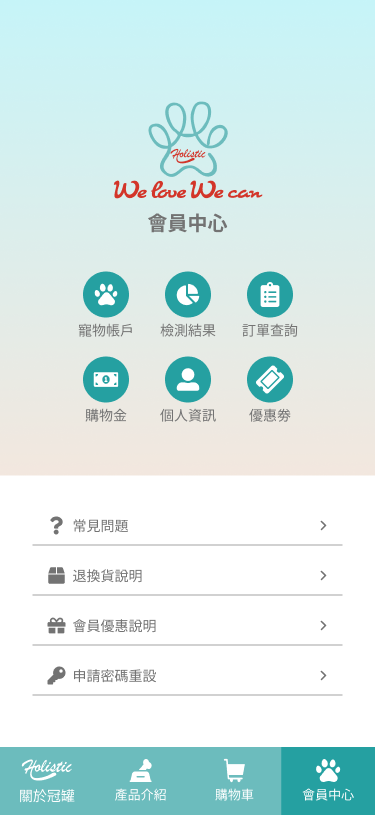
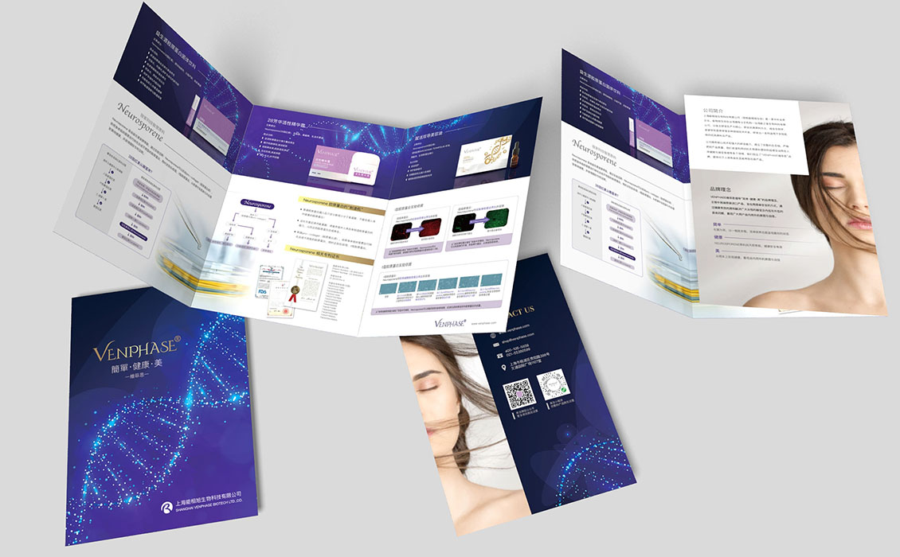
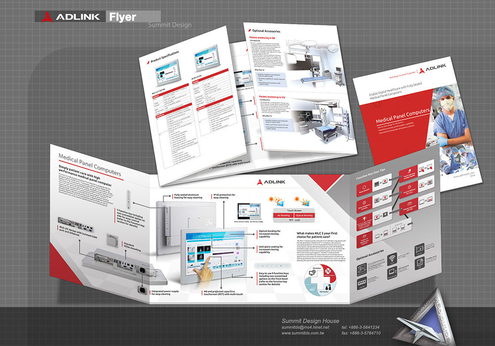
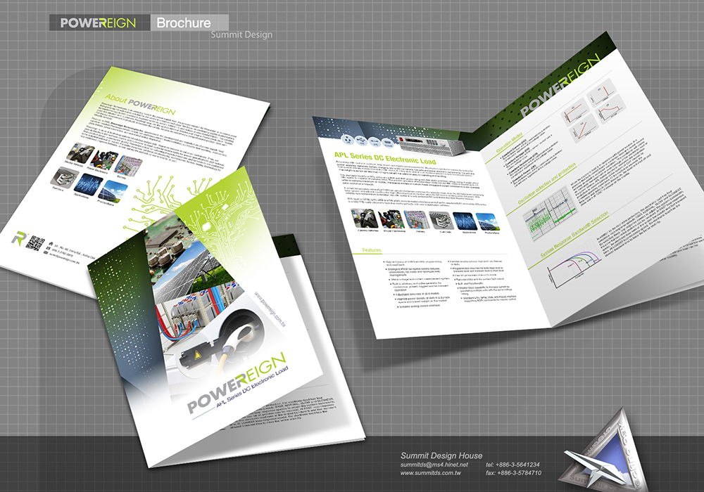
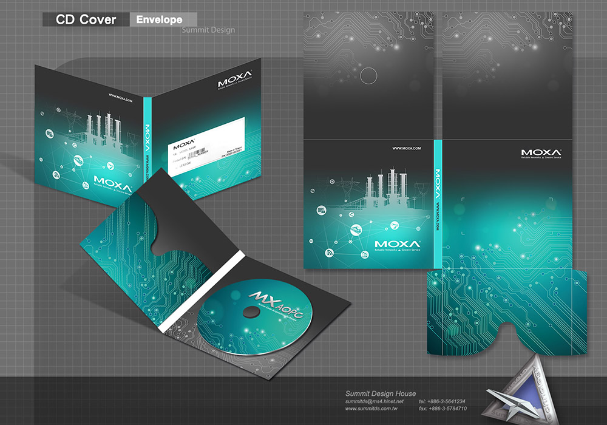
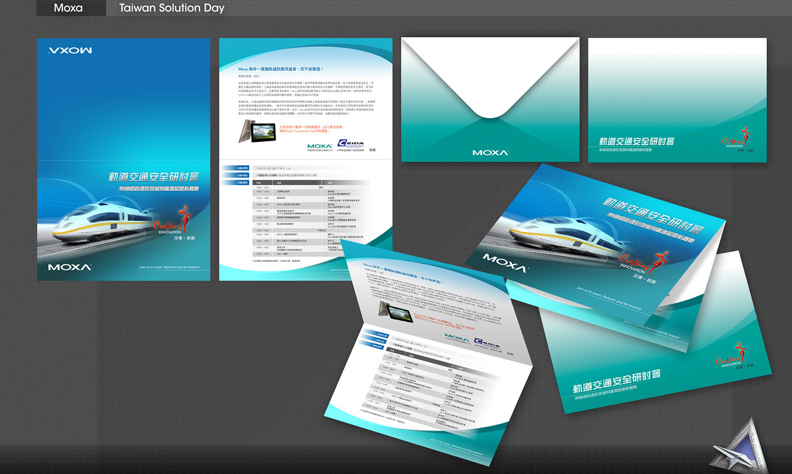

My Portfolio
A curation of digital and physical design
01 / scratch
off
Interactive Games
Game interface design focused on intuitive UI/UX and user flow.

02 / Lottery game
Design
Game UI
Professional game design showcasing innovative UI/UX solutions
Bet Slip
- 01Revise chip design and add a mini keypad
- 02Add individual bet delete buttons to streamline steps
- 03Remove update button; switch to auto-refresh or pull-to-refresh
Main
- 01Redesign the bottom navigation bar: center the Bet Slip as the primary focus and add bet status indicators
- 02Differentiate betting area and tool area through design to improve focus
- 03Add previous match results and reposition history for easier access during betting
My Bets
- 01Consolidate Unsettled / Settled / Auto bets into one view
- 02Add aggregated bet overview with result analysis and filtering options
- 03Display more bet details; expand inline on click without leaving the page
03 / Pet
e-commerce
Web Design
Commercial website with integrated e-commerce platform



04 / Product
Video
Video Production
Product and commercial video storytelling
05 / poster
Design
Exhibition Design
Trade show and exhibition visual design
06 / DM & Other
Design
Print Design
Marketing materials and print collateral




